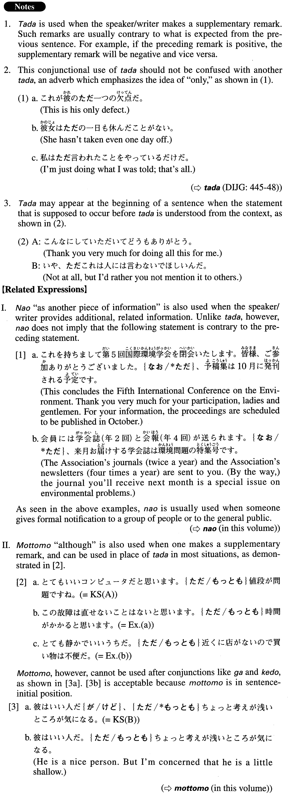

ただ (A. 570)
- (ksa).
- この辺りは駅にもスーパーにも近くて便利だ。ただ環境があまりよくない。
- This area is close to both the station and a supermarket, so it's convenient, but the environment is not very good.
- (ksb).
- とてもいいコンピュータだと思います。ただ値段が問題ですね。
- I think this is a very good computer. But, the price is a problem.
- (a).
- 彼はいい人だ{が/けど}、ただちょっと考えが浅いところが気になる。
- He is a nice person, only I'm concerned that he is a little shallow.
- (b).
- この故障は直せないことはないと思います。ただ時間がかかると思います。
- It's not impossible to repair this problem, only I think it'll take time.
- (c).
- とても静かでいいうちだ。ただ近くに店がないので買い物は不便だ。
- It is a very quiet and nice house, only there are no shops nearby, so it's inconvenient for shopping.
- (d).
- このデジカメ優れた機能をたくさん持っている。ただユーザーインターフェースが悪くて使いにくいのが難点だ。
- This digital camera has many outstanding functions. However, the problem is that it's hard to use because the user interface is bad.
- (e).
- たいていのことは私がいなくても他の者が代わりにやってくれるが、ただこの仕事は他の者に頼むわけにはいかない。
- For most things, if I'm not available others can do it for me; however, as far as this job is concerned, I cannot ask someone else to do it for me.
